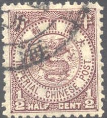
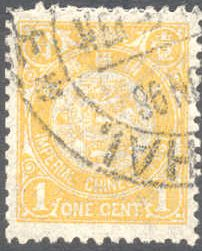
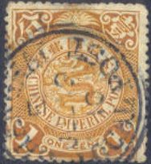
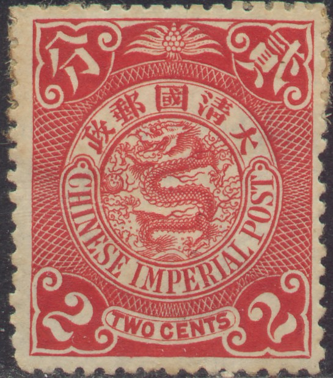
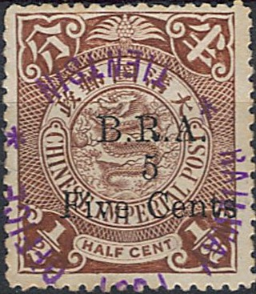
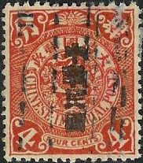

Return To Catalogue - Issues before 1897 - Issues of 1909-1920
Note: on my website many of the
pictures can not be seen! They are of course present in the
catalogue;
contact me if you want to purchase it.
Dragon
1/2 c lilac 1 c yellow 2 c red 4 c brown 5 c red 10 c green Fishes (carps)

20 c brown 30 c red 50 c green Bird


1 $ red 2 $ orange and yellow 5 $ green and lilac
These stamps have perforation 11 and watermark 'Shell'.
Value of the stamps |
|||
vc = very common c = common * = not so common ** = uncommon |
*** = very uncommon R = rare RR = very rare RRR = extremely rare |
||
| Value | Unused | Used | Remarks |
| 1/2 c | * | * | |
| 1 c | ** | ** | |
| 2 c | * | * | |
| 4 c | ** | ** | |
| 5 c | *** | ** | |
| 10 c | *** | ** | |
| 20 c | *** | *** | |
| 30 c | R | R | |
| 50 c | R | R | A 50c dark green error (colour of the 10 c) seems to exist: RRR |
| 1 $ | RR | RR | |
| 2 $ | RR | RR | |
| 5 $ | RR | RR | |
Dragon


1/2 c brown 1 c yellow 2 c red 2 c green 3 c green 4 c brown 4 c red 5 c red 5 c violet 7 c brown 10 c green 10 c blue Fishes

16 c green 20 c brown 30 c red 50 c green Bird (Goose)


1 $ red and lilac 2 $ red and yellow 5 $ green and lilac
The first issue of these stamps was printed on paper with watermark 'Shell'. This watermark is often very difficult to distinguish. Later (1902) it was printed on paper without watermark.
Value of the stamps |
|||
vc = very common c = common * = not so common ** = uncommon |
*** = very uncommon R = rare RR = very rare RRR = extremely rare |
||
| Value | Unused | Used | Remarks |
Cheapest Types |
|||
| 1/2 c | c | c | |
| 1 c | c | vc | |
| 2 c red | * | c | |
| 2 c green | * | vc | 1905 |
| 3 c | * | vc | 1905? |
| 4 c brown | * | * | |
| 4 c red | * | * | 1909 |
| 5 c red | *** | ** | |
| 5 c violet | * | c | 1905 |
| 7 c | *** | ** | 1905? |
| 10 c green | *** | c | |
| 10 c blue | *** | * | 1908 |
| 16 c | *** | ** | 1907 |
| 20 c | *** | * | |
| 30 c | *** | * | |
| 50 c | *** | * | |
| 1 $ | R | ** | |
| 2 $ | RR | *** | |
| 5 $ | RR | RR | |
Surcharged horizontally with Chinese text 'Neutrality' (1912)
3 c green (red overprint) 1 $ red 2 $ red and yellow 5 $ green
Value of the stamps |
|||
vc = very common c = common * = not so common ** = uncommon |
*** = very uncommon R = rare RR = very rare RRR = extremely rare |
||
| Value | Unused | Used | Remarks |
| 3 c | RR | R | |
| 1 $ | RRR | RRR | |
| 2 $ | RRR | RRR | |
| 5 $ | RRR | RRR | |
Surcharged vertically with Chinese text 'Chinese republic' (3 types, 1912)

1/2 c brown 1 c yellow (red) 2 c green (red) 3 c green (red) 4 c red 5 c violet (red) 7 c brown 10 c blue (red)
(Reduced sizes)

16 c green (red) 20 c brown 30 c red 50 c green (red)
(Reduced sizes)
1 $ red 2 $ red and yellow 5 $ green
The overprint exists in three types; two were made locally and one in London. This overprint was necessary due to the revolution of 1911.
Value of the stamps |
|||
vc = very common c = common * = not so common ** = uncommon |
*** = very uncommon R = rare RR = very rare RRR = extremely rare |
||
| Value | Unused | Used | Remarks |
Cheapest Types |
|||
| 1/2 c | c | vc | |
| 1 c | c | vc | |
| 2 c | * | c | |
| 3 c | * | vc | |
| 4 c | * | * | |
| 5 c | * | * | |
| 7 c | * | * | |
| 10 c | * | * | |
| 16 c | ** | ** | |
| 20 c | ** | * | |
| 30 c | *** | ** | |
| 50 c | *** | ** | |
| 1 $ | *** | ** | |
| 2 $ | R | *** | |
| 5 $ | RR | RR | |
Double surcharged with Chinese text 'Neutrality' and 'Chinese republic' (1912)
(Reduced size)
1 c yellow (overprint red) 3 c green (overprint red) 7 c brown 16 c green (overprint red) 50 c green (overprint red) 1 $ red 2 $ red and yellow 5 $ green
Many forged overprints exist!
Value of the stamps |
|||
vc = very common c = common * = not so common ** = uncommon |
*** = very uncommon R = rare RR = very rare RRR = extremely rare |
||
| Value | Unused | Used | Remarks |
| 1 c | RR | RR | |
| 3 c | RR | RR | |
| 7 c | RR | RR | |
| 16 c | RRR | RRR | |
| 50 c | RRR | RRR | |
| 1 $ | RRR | RRR | |
| 2 $ | RRR | RRR | |
| 5 $ | RRR | RRR | |
Surcharged with 'B R A 5 Five Cents' in green or black, (1901, British Railway Administration)

Note the typical violet cancel
'B R A 5 Five Cents' on 1/2 c brown
Value of the stamps |
|||
vc = very common c = common * = not so common ** = uncommon |
*** = very uncommon R = rare RR = very rare RRR = extremely rare |
||
| Value | Unused | Used | Remarks |
| 5 c on 1/2 c | RR | RR | |
A 2 c stamp was bisected and surcharged 'Postage 1 Cent Paid' (provisional issue of Foochow) in 22 and 23 October 1903, click here for more information.

Tibet issue
These stamps surcharged in 'Pies', 'Annas' or 'Rupies' were issued for Tibet.
If I'm informed correctly, these are local diagonal overpints?:
I've been told that the next stamp is a postal forgery:

This postal forgery is described in 'Postal Forgeries of the World' by H.G. Leslie Fletcher. It is lithographed instead of engraved resulting in a bad quality of the finer details of the stamp, such as the central dragon and the lined background. It is also printed on much thinner paper than the genuine stamp.
For stamps of China issued after 1908 click here.
Stamps - Timbres-Poste - Briefmarken - Postzegels


{kind=link}
{kind=link}
{kind=link}
{kind=link}
{kind=link}